Installations Manual
Ultimate Manual for My Windows Installations
One-Stop Guide to all my windows releated concerns & settings dilemma.
- Version: 1.0
- Author: Sanjeev Stephan
- Created: 30 May, 2023
- Update: 30 May, 2023
If you have any questions that are beyond the scope of this help file, Please feel free to email via Item Support Page.
Installation
Follow the steps below to setup your site template:
- Unzip the downloaded package and open the /HTML folder to find all the template files. You will need to upload these files to your hosting web server using FTP or localhost in order to use it on your website.
- Below is the folder structure and needs to be uploaded to your website or localhost root directory:
HTML/assets- Contains all of the assets referencedHTML/css- Stylesheet filesHTML/images- Images filesHTML/js- Javacript filesHTML/sass- Sass filesHTML/vendor– All external libs.
HTML/index.html- Homepage
- You should upload all or specific HTML files as per your need.
- You are good to go for adding your content now!
Auto Installer
Windows Package Manager winget command-line tool is available on Windows 11 and modern versions of
Windows 10 as a part of the App Installer.
You can get App Installer from the Microsoft Store .
If it's already installed, make sure it is updated with the latest version.
# Installing on the terminal via winget tool
#=============================================
# Install Git
winget install --id Git.Git -e --source winget
# Search Latest PowerShell
winget search Microsoft.PowerShell
# Install PowerShell
winget install --id Microsoft.Powershell --source winget
If you need more information on winget tool, please visit
learn.microsoft.com site:
https://learn.microsoft.com/en-us/windows/package-manager/winget/
Check for Updates
First Task after window installations is to Check for Updates which makes things easier to
setup later on
Follow the Steps to Update your windows or Go to
Settings -> Windows Update -> Checks for updates
- Click on the
Search Box& Typeupdates - Click on the
Check for updates- under system settings - You Should automatically starts getting
downloads- require Internet to Work - Now Click
Download & Install All- to install your updates - Click
Restart Now- If you see any pending restart
Once you have download & installed the updates. You should Restart Your PC.
Updates Available

Updates Done

Download & Install Drivers
For Your PC/Computer to work properly, it need Drivers which delivers the
best user-experiences & productivity.
Go to Dell & Download the latest Drivers for Dell Vostro 3558
Drivers
| Driver Name | Version | Category | Instructions | Download |
|---|---|---|---|---|
| Intel Bluetooth Driver | 21.10.1.1, A08 | Network, Ethernet & Wireless | How to Install | Download |
Download the Necessary Drivers from the table and begin to install it!
Add Bluetooth Keyboard
How to install & Configure Zebronics Bluetooth-Keyboard
Go toDownload Intel Bluetooth Driver webpageDownloadtheIntel Bluetooth Driver-> Intel-Bluetooth-Driver_192VX_WIN_21.10.1.1_A08_01.EXE- To
Installthe Driver - Go to the Downloads directory - Click
Nextto Continue - Bluetooth Driver has been
Successfully Installed - Bluetooth Option is
EnabledNow - Congratulations! SearchFor the Bluetooth Devices- We'll be Setting up ( Zebronics Bluetooth Keyboard | Model No - ZEB-K5001MW ) | Buy Again

- Press & Hold the
BT1button on yourZebronicsBluetooth Keyboard ( Model No :ZEB-K5001MW)
Note : You Should See theBlue LED Flashingmeans it is inPAIRING-MODE Found- ZEB-K5001MW (Bluetooth-Keyboard) |Clickto Connect The Device
- You have Successfully
Connectedthe Bluetooth Keyboad - Repeat The Process to Add to another PC
Alternatively => Press and Hold the
BT2- To Pair to another Linux PC- Press
Fn + BT1- To Connect Window PC - Press
Fn + BT2- To Connect Linux PC
- Press
- Enjoy
Coding!
Written by Sanjeev Stephan Murmu for his System on 30th May
2023
Update Apps from Store
Open Microsoft Store & Update below Apps
Apps
Microsoft Store- Apps store for Windows AppsMicrosoft Photos- Apps for PhotosMicrosoft Windows Terminal- Powerful Command Line Window for Multiple InterpretersMicrosoft Notepad- Apps for taking NotesWindows Web Experience Pack- Apps to Improve Web ExperienceSnipping Tool- Apps to take ScreenShots Desktop ScreenPower Automate- Powerfull App for GUI Automations in WindowsMicrosoft Todo Lists- Apps to tracking todo lists
Disable Auto-Updates
Step-1 | Go to Account and Click Settings |
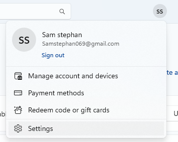 |
Step-2 | Disable the Auto-Updates |
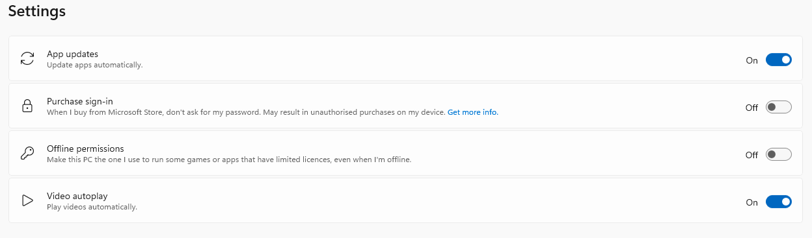 |
My Personalize & <Tweaks> & <Settings>
A. Setting Up File-Explorer to Open This PC instead of opening
Recent Files
- Go To
This PC& Click on thethree-dots
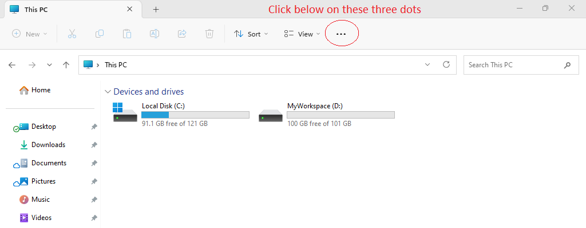 - Click on the
Options
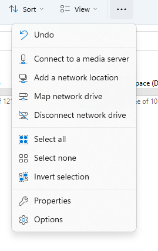 - Change the Open Filfe Explorer from
HometoThis PC
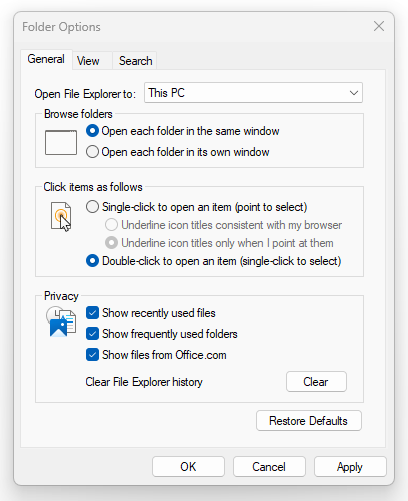
B. Show File-Extension of Known File-Types
- Make the Following Changes in
Folder Options -> View
A. Setting Up Small Icons
- Right-Click on the Desktop and Click
View -> Small Icons
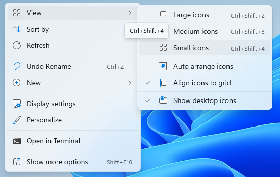
A. Setting Up Taskbar Alignment from Center to
Left Corner of the display
Before Making Changes
After Making Changes- Go to the
Settings -> Personalization| Simply Click here to Open Taskbar-Setting
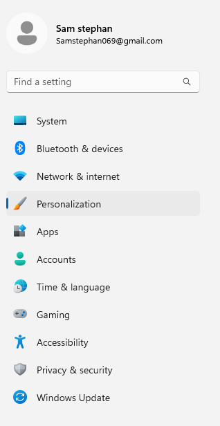 - On the Personalization Section, You'll see
Taskbar
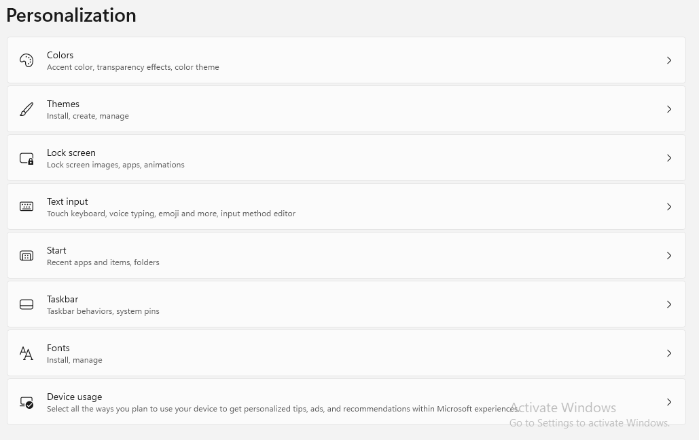 - Disable the Taskbar Items
Widgets&Chats
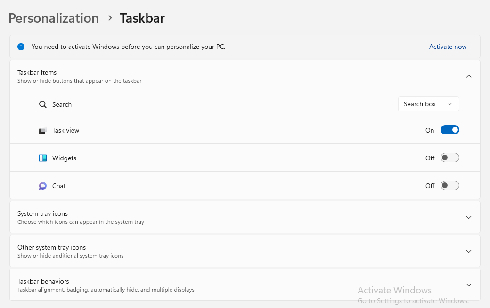 - Uncheck the Show My Taskbar on all displays

- Change the Taskbar Aligment fom
CentertoLeft
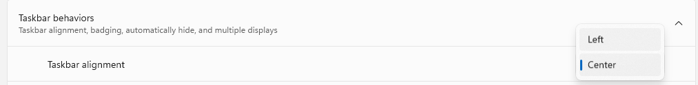 - Task-Alignment Changed Successfully to
Left
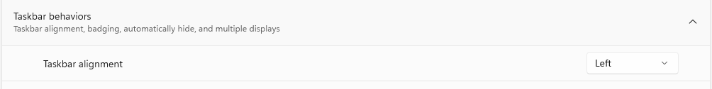 - You have Successfully
Changedthe Task-Alignment
B. Disable Chats & Widgets
- Make the Following Changes in
Settings -> Personalization -> Taskbar -> Taskbar Items
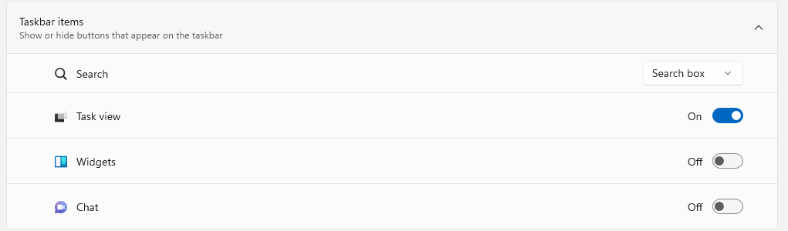
Settings <Shortcuts>
| Setting | Navigation | Shorcut URL |
|---|---|---|
| System | Settings -> System | Open Setting |
| BLuetooth & Devices | Settings -> Bluetooth | Open Setting |
| Default Apps | Apps -> Default Apps | Open Setting |
| Taskbar | Setting -> Personalization -> Taskbar | Open Setting |
Install Windows Softwares
Install Softwares & Packages for Windows 11
Git:
- Git Cli- https://git-scm.com/download/win
- Github Desktop - https://desktop.github.com/
Code-Editor:
- Visual Studio Code - https://code.visualstudio.com/download
Development:
- Node.js - https://nodejs.dev/en/download/
- Python - https://www.python.org/downloads/
- PowerShell - https://learn.microsoft.com/en-us/powershell/scripting/install/
- jQuery easing - http://gsgd.co.uk/sandbox/jquery/easing/
- Magnific Popup - http://dimsemenov.com/plugins/magnific-popup/
For Microcontrollers:
- Arduino - https://www.arduino.cc/en/software
Flasher
- balenaEtcher - https://etcher.balena.io/
- Rufus - https://rufus.ie/en/
- Raspberry Pi Imager - https://www.raspberrypi.com/software/
- Magnific Popup - http://dimsemenov.com/plugins/magnific-popup/
Git
Git is a free and open source distributed version control system designed to handle everything from small to very large projects with speed and efficiency.:
Install via Terminal
This install is easy & straightforward. Works only for Window 11 & 10 with winget tool Installed.
winget install --id Git.Git -e --source winget This Should result in the following output
Found Git [Git.Git] Version 2.40.1
This application is licensed to you by its owner.
Microsoft is not responsible for, nor does it grant any licenses to, third-party packages.
Downloading https://github.com/git-for-windows/git/releases/download/v2.40.1.windows.1/Git-2.40.1-64-bit.exe
██████████████████████████████ 51.4 MB / 51.4 MB
Successfully verified installer hash
Starting package install...
Successfully installed
Congratulations - Git Cli is Installed Successfully
Install via GUI
Download and install Git-Cli for diferent Platforms
- Download Git for Windows - https://git-scm.com/download/win
- Download Git for Linux - https://git-scm.com/download/linux
Sources
- Downloads - https://git-scm.com/downloads
- Documentations - How to use the PowerShell
PowerShell
PowerShell is a cross-platform task automation solution made up of a command-line shell, a
scripting language, and a configuration management framework.
PowerShell runs on Docker,
Windows,
Linux, and macOS.
Install PowerShell using Winget (recommended)
The following commands can be used to install PowerShell using the published winget packages:
-
Search for the latest version of
PowerShellwinget search Microsoft.PowerShell -
Output
The `msstore` source requires that you view the following agreements before using. Terms of Transaction: https://aka.ms/microsoft-store-terms-of-transaction The source requires the current machine's 2-letter geographic region to be sent to the backend service to function properly (ex. "US"). Do you agree to all the source agreements terms? [Y] Yes [N] No: Y Name Id Version Source --------------------------------------------------------------- PowerShell Microsoft.PowerShell 7.3.4.0 winget PowerShell Preview Microsoft.PowerShell.Preview 7.4.0.3 winget -
Install PowerShell or PowerShell Preview using the id parameter
winget install --id Microsoft.Powershell --source winget winget install --id Microsoft.Powershell.Preview --source winget -
Output
Found PowerShell [Microsoft.PowerShell] Version 7.3.4.0 This application is licensed to you by its owner. Microsoft is not responsible for, nor does it grant any licenses to, third-party packages. Downloading https://github.com/PowerShell/PowerShell/releases/download/v7.3.4/PowerShell-7.3.4-win-x64.msi ██████████████████████████████ 100 MB / 100 MB Successfully verified installer hash Starting package install... Successfully installed
Verify Installation
You can verify the version of PowerShell you are using by inspecting the $PSversionTable.PSVersion value.
$PSVersionTableOutput.
Name Value
---- -----
PSVersion 7.3.4
PSEdition Core
GitCommitId 7.3.4
OS Microsoft Windows 10.0.22621
Platform Win32NT
PSCompatibleVersions {1.0, 2.0, 3.0, 4.0…}
PSRemotingProtocolVersion 2.3
SerializationVersion 1.1.0.1
WSManStackVersion 3.0
$PSVersionTable.PSVersionOutput.
Major Minor Patch PreReleaseLabel BuildLabel
----- ----- ----- --------------- ----------
7 3 4
Installing the MSI package
To install PowerShell on Windows, use the following links to download the install package from GitHub.
Once downloaded, double-click the installer file and follow the prompts.
The installer creates a shortcut in the Windows Start Menu.
- By default the package is installed to
$env:ProgramFiles\PowerShell\<version></version>
Installing the ZIP package
PowerShell binary ZIP archives are provided to enable advanced deployment scenarios.
Download one of the following ZIP archives from the current release
page.
Depending on how you download the file you may need to unblock the file using the Unblock-File
cmdlet. Unzip the contents to the location of your choice and run pwsh.exe from there.
Sources
- PowerShell Overview - Install PowerShell on Windows, Linux, and macOS
- Documentations - https://git-scm.com/doc
- Read Offline PDF - powershell-scripting-powershell-7.3.pdf
Sidebar
We have built fixed sidebar navigation with bootstrap scrollspy function for docs layout. which is automatically update navigation based on scroll position to indicate which link is currently active in the viewport.
The example below sidebar vertical navigation with bootstrap navs and scrollspy components and section of docs content.
<!-- Sidebar Navigation
============================ -->
<div class="idocs-navigation bg-light">
<ul class="nav flex-column ">
<li class="nav-item"><a class="nav-link active" href="#item_1">Item 1</a>
<ul class="nav flex-column">
<li class="nav-item"><a class="nav-link" href="#item_1_1">Sub Item 1.1</a></li>
<li class="nav-item"><a class="nav-link" href="#item_1_2">Sub Item 1.2</a></li>
</ul>
</li>
<li class="nav-item"><a class="nav-link" href="#item_2">Item 2</a>
<ul class="nav flex-column">
<li class="nav-item"><a class="nav-link" href="#item_2_1">Sub Item 2.1</a></li>
<li class="nav-item"><a class="nav-link" href="#item_2_2">Sub Item 2.2</a></li>
</ul>
</li>
<li class="nav-item"><a class="nav-link" href="#item_3">Item 3</a></li>
<li class="nav-item"><a class="nav-link" href="#item_4">Item 4</a></li>
</ul>
</div>
<!-- Docs Content
============================ -->
<div class="idocs-content">
<div class="container">
<!-- Item 1 -->
<section id="item_1">
<h2>Item 1</h2>
<p>...</p>
</section>
<hr class="divider">
<!-- Item 1.1 -->
<section id="item_1_1">
<h2>Item 1.1</h2>
<p>...</p>
</section>
<hr class="divider">
<!-- Item 1.2 -->
<section id="item_1_2">
<h2>Item 1.2</h2>
<p>...</p>
</section>
<hr class="divider">
<!-- Item 2 -->
<section id="item_2">
<h2>Item 2</h2>
<p>...</p>
</section>
<hr class="divider">
<!-- Item 2.1 -->
<section id="item_2_1">
<h2>Item 2.1</h2>
<p>...</p>
</section>
<hr class="divider">
<!-- Item 2.2 -->
<section id="item_2_2">
<h2>Item 2.2</h2>
<p>...</p>
</section>
<hr class="divider">
<!-- Item 3 -->
<section id="item_3">
<h2>Item 3</h2>
<p>...</p>
</section>
<hr class="divider">
<!-- Item 4 -->
<section id="item_4">
<h2>Item 4</h2>
<p>...</p>
</section>
</div>
</div>
Light Sidebar:
Light background Color & Dark text for light sidebar. See below image and code for more information.
Add the .bg-light class to the main sidebar navigation div element to display a light
sidebar.
<!-- Sidebar Navigation
============================ -->
<div class="idocs-navigation bg-light">
....
</div>Dark Sidebar:
Dark background Color & Light text for dark sidebar. See below image and code for more information.

Add the .bg-dark and .docs-navigation-dark class to the main sidebar navigation
div element to display a dark sidebar.
<!-- Sidebar Navigation
============================ -->
<div class="idocs-navigation bg-dark docs-navigation-dark">
....
</div>Box Layout Style
Default Layout Style is wide. Please add the .box class to the <body>
Tag for box layout.
<body class="box" data-spy="scroll" data-target=".idocs-navigation" data-offset="125">Terminal
Windows Terminal is a modern host application for the command-line shells you already love, like Command Prompt, PowerShell, and bash (via Windows Subsystem for Linux (WSL)).
Get Started with Terminal
Intro
- What is Windows Terminal?
- Downloads Window Terminal- https://aka.ms/PSWindows
- Install and get started setting up Windows Terminal - https://aka.ms/PSWindows
- How to use the command palette in Windows Terminal
- Launch on machine startup
Install & Run
Personalized
- How to use the command palette in Windows Terminal
- Launch on machine startup
- Center on launch
- Continue running in the background
- Automatically copy selection to clipboard
- Automatically focus pane on mouse hover
- Automatically detect URLs and make them clickable
- Automatically run as Administrator
- Word delimiters
- Word delimiters
- Tab switcher interface style
- Always on top mode
- Always show tabs
- Show acrylic in tab row
- Use a background image for the entire window
- Background images and icons
- Custom actions in Windows Terminal
- Starting directory
Appearence
Install Terminal
Documentation and examples for typography, headings, body text, lists, and more.
To try the latest preview features, you may also want to install Windows Terminal Preview.
Note If you don't have access to the Microsoft Store, the builds are published on the GitHub releases page
If you install from GitHub, Windows Terminal will not automatically update with new
versions.
For additional installation options using a package manager (winget, chocolatey,
scoop),
see the
Windows Terminal product repository
Set As Default Terminal App
Documentation and examples for displaying inline and multiline blocks of code
Inline code
Wrap inline snippets of code with <code>. Be sure to escape
HTML angle brackets.
For example, <section> should be wrapped as inline.
For example, <code><section></code> should be wrapped as inline.Code blocks
Use <pre>s for multiple lines of code. Once again, be sure to
escape any angle brackets in the code for proper rendering. You may optionally add the
.pre-scrollable class, which will set a max-height of 340px and provide a y-axis scrollbar.
For example:
<p>Sample text here...</p>
<p>And another line of sample text here...</p>
Have to use something like:
<pre><code><p>Sample text here...</p>
<p>And another line of sample text here...</p>
</pre></code>
Syntax highlighter
We use Highlight Js for syntax highlight code snippet.
You can refer more information here: How to use highlight.js
Set Default Terminal Profile
Documentation and examples for opt-in styling of tables.
iDocs is based on Bootstrap 4, so you can easily use Bootstrap's table classes to style your table. Bootstrap Documentation
Bordered
<table class="table table-bordered">
.......
</table>| # | First | Last | Handle |
|---|---|---|---|
| 1 | Mark | Otto | @mdo |
| 2 | Jacob | Thornton | @fat |
| 3 | Larry | the Bird |
Striped
<table class="table table-bordered table-striped">
.......
</table>| # | First | Last | Handle |
|---|---|---|---|
| 1 | Mark | Otto | @mdo |
| 2 | Jacob | Thornton | @fat |
| 3 | Larry | the Bird |
NoteYou can refer more information in Bootstrap Documentation here: Bootstrap Documentation
Customized Settings
Command Palette
Font Awesome icon sets are used in iDocs.
<i class="fas fa-mobile-alt"></i>
<i class="fab fa-twitter"></i>
<i class="fas fa-credit-card"></i>
<i class="fab fa-facebook-f"></i>
NotePlease go to their official documentation pages for a full list of icons: Font Awesome
Useful Shorcut Keys
Documentation and examples for opting images into responsive behavior and add lightweight styles to them—all via classes.
Default Shortcuts
| Heading | Example |
|---|---|
<h6></h6> |
h6. Heading |
Personalized Shortcuts
| Heading | Example |
|---|---|
<h6></h6> |
h6. Heading |
Setting.json
Create responsive video embeds based on the width of the parent by creating an intrinsic ratio that scales on any device.
Embedded Video
Wrap any embed like an <iframe> in a parent element with
.embed-responsive and an aspect ratio. The .embed-responsive-item isn’t strictly
required, but we encourage it.
<div class="embed-responsive embed-responsive-16by9">
<iframe class="embed-responsive-item" src="https://www.youtube.com/embed/7e90gBu4pas" allowfullscreen></iframe>
</div>NotePlease go to official bootstrap documentation for a full information of embed video: Bootstrap Documentation
Popup with Video
Show Youtube and Vimeo video popup when click on link:
<a class="popup-youtube" href="http://www.youtube.com/watch?v=7e90gBu4pas">Open Popup YouTube Video </a><a class="popup-vimeo" href="https://vimeo.com/45830194">Open Popup Vimeo video</a>Components
Setting up components is very easy. Here is the Some of shortcodes describe. also, iDocs is based on Bootstrap 4, so you can easily use Bootstrap's components: Bootstrap Documentation
Accordion
You can extend the default collapse behavior to create an accordion. To properly achieve the accordion
style, be sure to use .accordion as a wrapper.
See below image and code for more information.

<div class="accordion" id="accordionDefault">
<div class="card">
<div class="card-header" id="headingOne">
<h5 class="mb-0"> <a href="#" data-toggle="collapse" data-target="#collapseOne" aria-expanded="true" aria-controls="collapseOne">Accordion Title</a> </h5>
</div>
<div id="collapseOne" class="collapse show" aria-labelledby="headingOne" data-parent="#accordionDefault">
<div class="card-body">This is Accordion Content</div>
</div>
</div>
<div class="card">
<div class="card-header" id="headingTwo">
<h5 class="mb-0"> <a href="#" class="collapsed" data-toggle="collapse" data-target="#collapseTwo" aria-expanded="false" aria-controls="collapseTwo">Accordion Title</a> </h5>
</div>
<div id="collapseTwo" class="collapse" aria-labelledby="headingTwo" data-parent="#accordionDefault">
<div class="card-body">This is Accordion Content</div>
</div>
</div>
<div class="card">
<div class="card-header" id="headingThree">
<h5 class="mb-0"> <a href="#" class="collapsed" data-toggle="collapse" data-target="#collapseThree" aria-expanded="false" aria-controls="collapseThree">Accordion Title</a> </h5>
</div>
<div id="collapseThree" class="collapse" aria-labelledby="headingThree" data-parent="#accordionDefault">
<div class="card-body">This is Accordion Content</div>
</div>
</div>
</div>
Options:
| Type Class | Features | Code Example |
|---|---|---|
.accordion-alternate |
Alternate Minimal Style for the accordions. |
|
.arrow-right |
For set arrow in right side in accordions |
|
Tabs
Default Bootstrap Nav component combined with iDocs for unique tabs.
See below image and code for more information.

<ul class="nav nav-tabs" id="myTab" role="tablist">
<li class="nav-item" role="presentation">
<a class="nav-link active" id="home-tab" data-toggle="tab" href="#home" role="tab" aria-controls="home" aria-selected="true">Home</a>
</li>
<li class="nav-item" role="presentation">
<a class="nav-link" id="profile-tab" data-toggle="tab" href="#profile" role="tab" aria-controls="profile" aria-selected="false">Profile</a>
</li>
<li class="nav-item" role="presentation">
<a class="nav-link" id="contact-tab" data-toggle="tab" href="#contact" role="tab" aria-controls="contact" aria-selected="false">Contact</a>
</li>
</ul>
<div class="tab-content my-3" id="myTabContent">
<div class="tab-pane fade show active" id="home" role="tabpanel" aria-labelledby="home-tab">This is Tab Content Home</div>
<div class="tab-pane fade" id="profile" role="tabpanel" aria-labelledby="profile-tab">This is Tab Content Profile</div>
<div class="tab-pane fade" id="contact" role="tabpanel" aria-labelledby="contact-tab">This is Tab Content Contact</div>
</div>Options:
| Type Class | Features | Code Example |
|---|---|---|
Basic Navs |
Basic Navs Style for the Tabs |
|
.nav-separator |
Basic Navs Style with Separator for the Tabs |
|
.nav-tabs |
Tabs Navs Style for the Tabs. For example - above Preview Example. |
|
.nav-pills |
Pills Navs Style for the Tabs |
|
Helper Classes
We have created some really useful helper classes for you. Here are a few of them. also, You can refer other default bootstrap helper classes here: Bootstrap Documentation
Text Size:
.text-0- Changes the Font size to 11px..text-1- Changes the Font size to 12px..text-2- Changes the Font size to 14px..text-3- Changes the Font size to 16px..text-4- Changes the Font size to 18px..text-5- Changes the Font size to 21px..text-6- Changes the Font size to 24px..text-7- Changes the Font size to 28px..text-8- Changes the Font size to 32px..text-9- Changes the Font size to 36px..text-10- Changes the Font size to 40px..text-11- Changes the Font size to 44px..text-12- Changes the Font size to 48px..text-13- Changes the Font size to 52px..text-14- Changes the Font size to 56px..text-15- Changes the Font size to 60px..text-16- Changes the Font size to 64px..text-17- Changes the Font size to 72px..text-18- Changes the Font size to 80px..text-19- Changes the Font size to 84px..text-20- Changes the Font size to 92px.
Font Weight:
.font-weight-100- For font weight of 100..font-weight-200- For font weight of 200..font-weight-300- For font weight of 300..font-weight-400- For font weight of 400..font-weight-500- For font weight of 500..font-weight-600- For font weight of 600..font-weight-700- For font weight of 700..font-weight-800- For font weight of 800..font-weight-900- For font weight of 900.
Background Color:
.bg-transparent- For background color of transparent.bg-light- For background color of light gray.bg-light-1- For background color of more light gray.bg-light-2- For background color of more light gray.bg-light-3- For background color of more light gray.bg-light-4- For background color of more light gray.bg-dark- For background color of dark.bg-dark-1- For background color of dark gray.bg-dark-2- For background color of more dark gray.bg-dark-3- For background color of more dark gray.bg-dark-4- For background color of more dark gray
Box Shadow
.shadow-none- For No shadow to elements with box-shadow utilities..shadow-sm- For Small shadow to elements with box-shadow utilities..shadow- For Regular shadow to elements with box-shadow utilities..shadow-md- For medium light shadows to elements with box-shadow utilities..shadow-lg- For Larger shadows to elements with box-shadow utilities.
Opacity
.opacity-1- For 10% opacity..opacity-2- For 20% opacity..opacity-3- For 30% opacity..opacity-4- For 40% opacity..opacity-5- For 50% opacity..opacity-6- For 60% opacity..opacity-7- For 70% opacity..opacity-8- For 80% opacity..opacity-9- For 90% opacity.
Border Radius
.rounded-top-0- No Border Radius for top..rounded-bottom-0- No Border Radius for bottom..rounded-left-0- No Border Radius for left..rounded-right-0- No Border Radius for right.
Borders, Sizing, Spacing (margin & padding) and also much more....
FAQ
A FAQ is a list of frequently asked questions (FAQs) and answers on a particular topic.
Source & Credits
Images:
- Unsplash - https://unsplash.com/
Fonts:
- Icons Font Face - https://fontawesome.com/
Scripts:
- jQuery - http://www.jquery.com/
- Bootstrap 4 - http://getbootstrap.com/
- Highlight Js - https://highlightjs.org/
- jQuery easing - http://gsgd.co.uk/sandbox/jquery/easing/
- Magnific Popup - http://dimsemenov.com/plugins/magnific-popup/
Support
If this documentation doesn't answer your questions, So, Please send us Email via Item Support Page
We are located in GMT +5:30 time zone and we answer all questions within 12-24 hours in weekdays. In some rare cases the waiting time can be to 48 hours. (except holiday seasons which might take longer).
Don’t forget to Rate this template
Go to your Themeforest Profile > Downloads Tab > & then You can Rate & Review for our template.
Thank You.
More Templates
Checkout Our Below Premium Templates


{kind=link}
{kind=link}
{kind=link}
{kind=link}
{kind=link}
{kind=link}
{kind=link}
{kind=link}
{kind=link}
{kind=link}
{kind=link}
{kind=link}
{kind=link}
{kind=link}
{kind=link}
{kind=link}
{kind=link}
{kind=link}
{kind=link}
{kind=link}
{kind=link}
{kind=link}
{kind=link}
{kind=link}
{kind=link}
{kind=link}
{kind=link}
{kind=link}
{kind=link}
{kind=link}
{kind=link}
Changelog
See what's new added, changed, fixed, improved or updated in the latest versions.
For Future Updates Follow Us @themeforest / @facebook / @twitter / @Dribbble
Version 1.1 (12 Oct, 2020)
- Added Your information here for added new feature
- Fixed Some minor bugs for browser compatibility
- Fixed Some minor bugs for responsive
- Updated FontAwesome to Latest Version
- Updated Bootstrap to Latest Version
- Updated Improvements in CSS and JS
Version 1.0 (8 April, 2020)
Initial Release